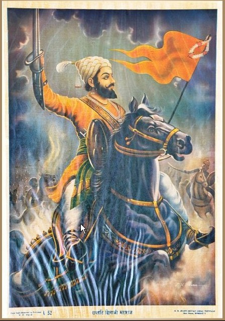

Chhatrapati Shivaji Maharaj

🚩 Father Of Indian Navy 🚩
He is considered as FATHER OF INDIAN NAVY
He built a strong naval presence across the coast of Konkan and Goa to protect sea trade.
Shivaji Maharaj built ships in towns such as Kalyan, Bhivandi, & Goa for building fighting navy as well
as
trade.
- > Shivaji Maharaj was born in the hill-fort of Shivneri, near the city of Junnar in Pune
district of Maharastra on 19 February 1630
- > Shivaji Maharaj was crowned as Chhatrapati of Raigad, on June 6th, 1674
- > From a small content of 2,000 soldiers contingent inherited from his father, he created a
force of 1,00,000 soldiers
- > Promoted use of Marathi & Sanskrit, rather than Persian in administration
- > Chatrapati Shivaji Maharaj was the founder of the Maratha Empire in western India
- > Pioneered Guerrilla Warfare Methods, referred to as Shiva Sutra
- > Shivaji Maharaj is well-known for his innovative military tactics that centered around
non-conventional methods leveraging strategic factors like geography, speed, and surprise to defeat
his
more powerful enemies.
For More Information Check here Chhatrapati Shivaji Maharaj